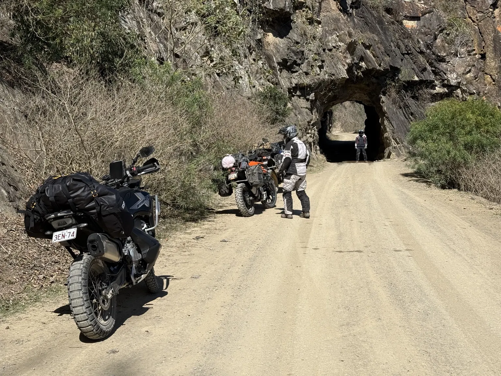
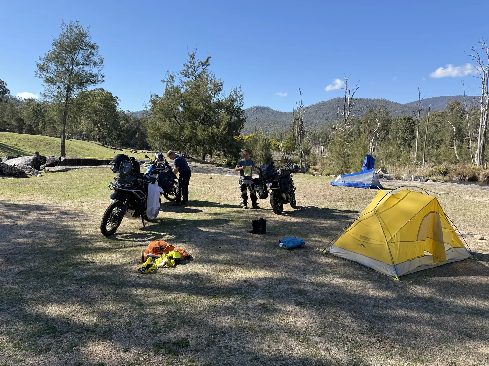
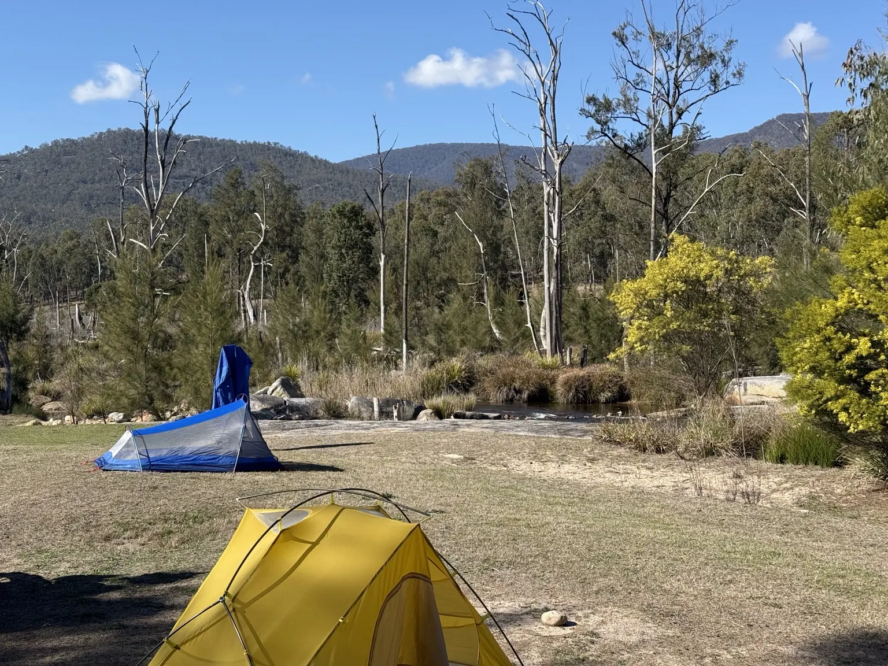
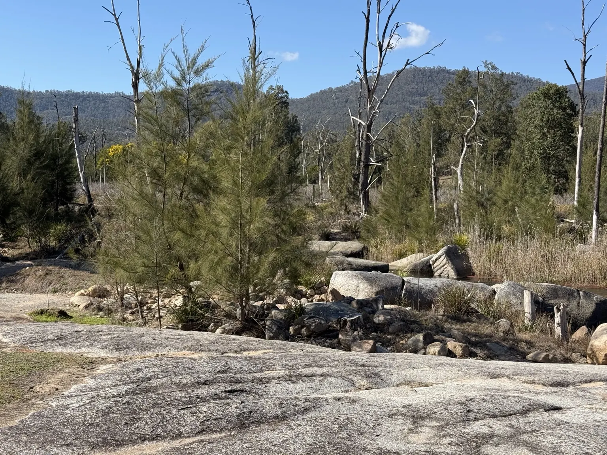
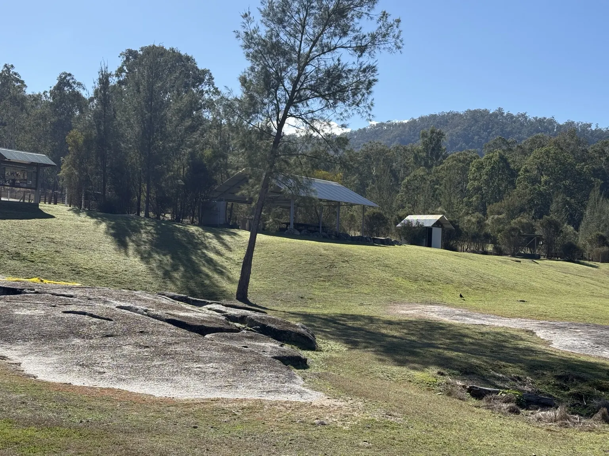
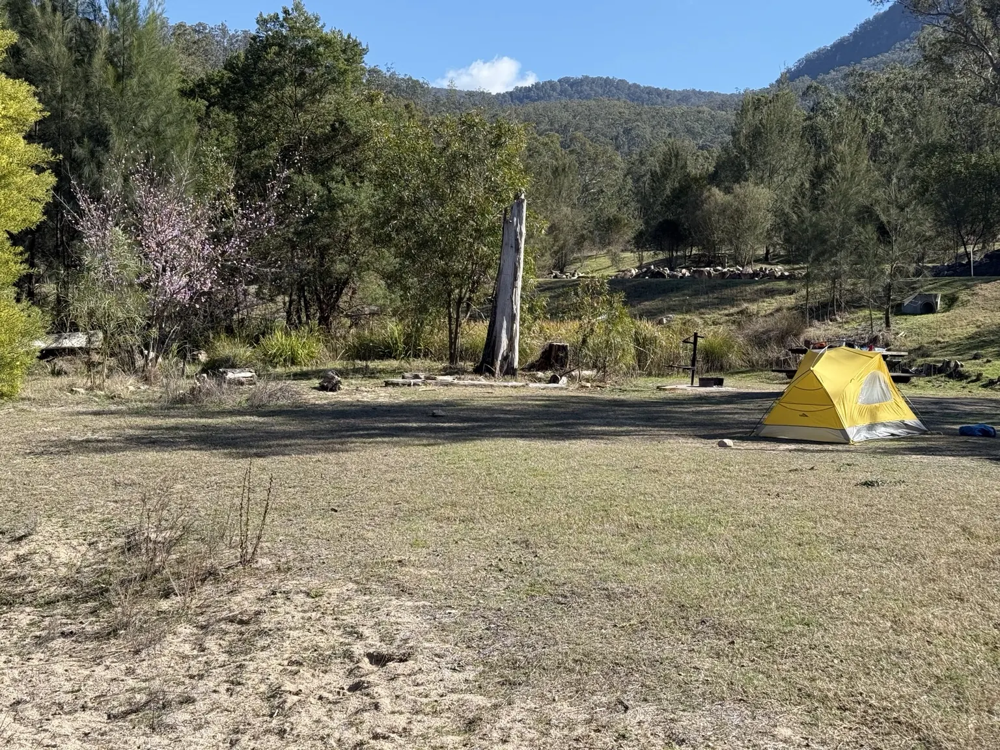
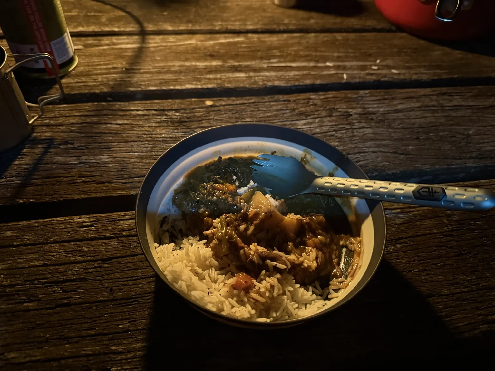
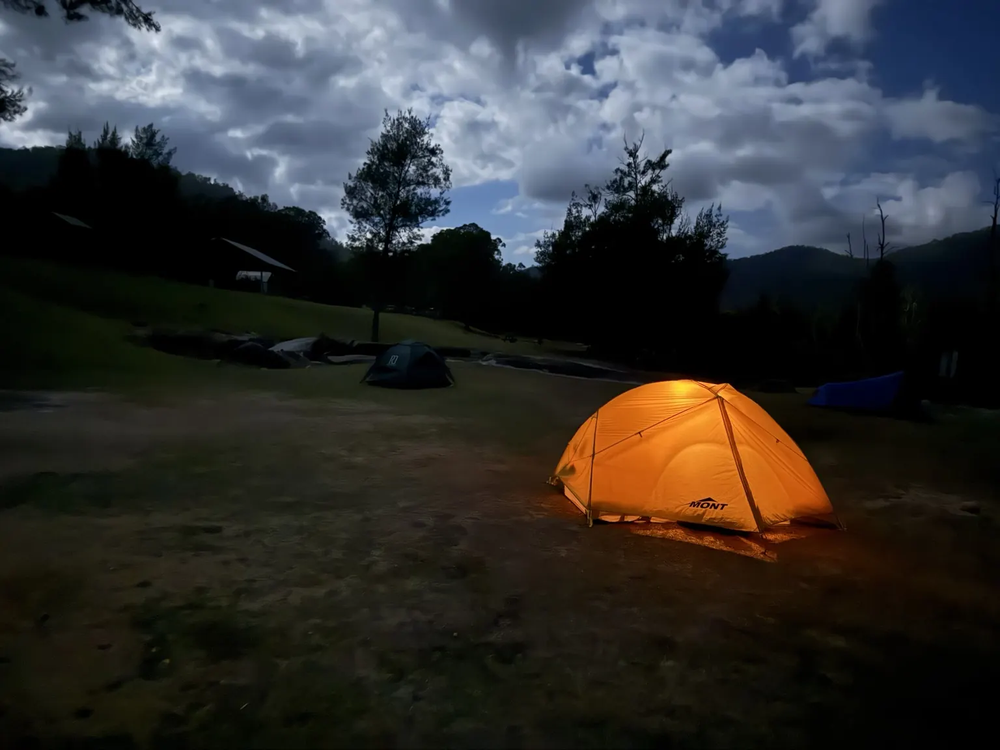
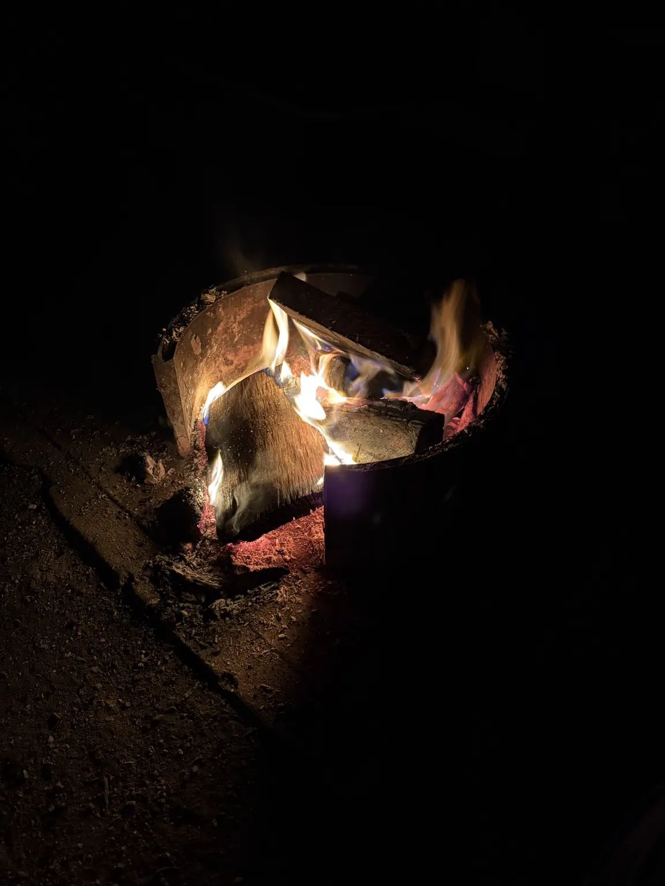
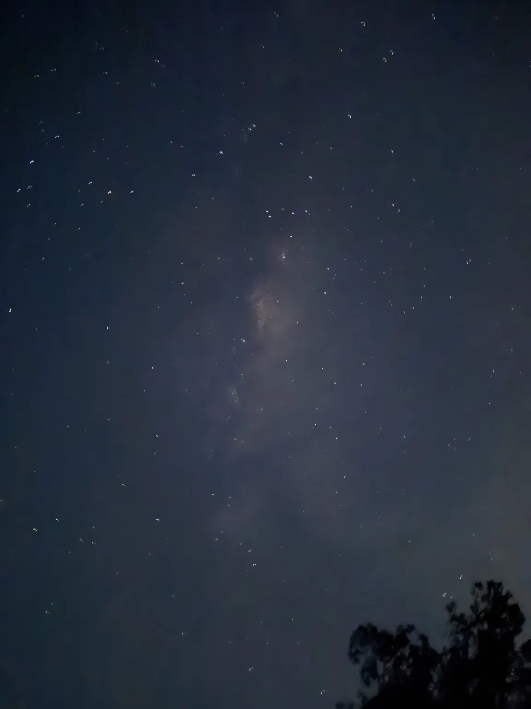

Ridden · Saturday 29 – Sunday 30 August 2026
Cornubia → Lions Road → Clarence Way → Grafton → Mann River Nature Reserve
Three riders, two days, one cold night. Photos from our Mann River adventure — bikes, river country, a night under the stars and a tunnel stop along the way.
Ten moments from Mann River. Tap a photo to view it full size.










The itinerary, distances, forecasts and alerts below are the planning notes for August 2026, retained as a record of the trip. They are not current travel information.
Wednesday is wet, then it clears and stays clear. The weekend itself is close to the best case for this trip — dry, bright, cold at night, and no warnings current for any district you ride through.
| Where | Saturday 29 | Sunday 30 |
|---|---|---|
| Kyogle — north end of the route | 9–23 °C · 40% | 10–22 °C · 60% |
| Grafton — lunch | 11–23 °C · 5–10% | 9–22 °C · 5–10% |
| Glen Innes — nearest to camp | 2–18 °C · 5% | 2–17 °C · 5% |
The percentages on the Kyogle line look worse than they are — both days are 0–3 mm and the chance sits on the coastal fringe rather than over the ranges. Saturday morning on the Lions Road should be dry. Sunday’s only real shower risk is the northern end, which is Plan B’s back half and Plan A’s highway run home.
Glen Innes is forecast 2 °C on both weekend mornings. Camp sits several hundred metres lower on the river, which usually runs a touch warmer — but cold air drains into that valley overnight, so treat 2 °C as the planning number and pack for zero. A light east-southeasterly is forecast to keep stirring through the night, which is the one thing working against a hard frost.
Sunset is 5:38 pm, last light just before 6:00 pm, and the valley walls take it well before that. Sunrise is 6:05 am, which gives you two hours of daylight to pack and eat before an 08:00 departure. Clear skies both nights — a good one for the stars and a cold one for anything left out of the tent.
Nothing found closed. NPWS lists no current alert for Mann River Nature Reserve or the campground, and Barool National Park is clear too. No closures reported on the Lions Road or Old Grafton Road — Kyogle Council has retired its own closures page and now points to Live Traffic NSW, so that is the one to check on the Friday.
No weather warnings are current for the Northern Tablelands, Northern Rivers or Mid North Coast. The only NSW severe weather and flood warnings on Tuesday were for the South West Slopes, Snowy Mountains and the Murray and Tumut rivers.
The NPWS Grafton office is shut until Thursday 27 August. If anything needs sorting on the booking before you leave, ring Glen Innes on 02 6739 0700 or the bookings line, not Grafton.
≈490 km · 7½ hours moving · allow 10 door to door. Meet 06:00, roll 06:15. Three fuel stops plus a top-up at Casino. NSW and Queensland run on the same time in August.
Clarence Valley Council reports 14.01 km of unsealed road between Copmanhurst and Baryulgil and a further 10.84 km between Baryulgil and the council boundary. Kyogle Council sealed its own 14.8 km section south of the Bruxner in 2021, but that is the northern end — the Clarence Valley middle still has around 25 km of gravel through it.
Nothing an adventure bike minds, and it is good country. But it is damp clay in the shaded cuttings after Wednesday's rain, and it is the reason this route costs ≈50 km and an hour over the Summerland Way straight.
Bail-out: if you are running late at Casino or Live Traffic shows the Clarence Way closed, turn south on the Summerland Way (B91) instead — 110 km of dull highway to Grafton, and camp by 15:00. Subtract 48 km from every distance after Casino.
Assume 220 km usable on Ollie's bike, not 250, and ≈100 km from the 8 L bladder. The Casino top-up is no longer optional — the Clarence Way makes Kyogle to Grafton 191 km, which leaves him 29 km.
| Leg | Distance | Margin |
|---|---|---|
| Cornubia → Kyogle | 160 km | 60 km |
| Kyogle → Casino (top-up) | 33 km | 187 km |
| Casino → Grafton (Clarence Way) | 158 km | 62 km |
| Grafton → Jackadgery | 50 km | 170 km |
| Jackadgery → camp | 91 km | 129 km |
| Camp → Grafton (Plan A) | 130 km | 80 km |
Ollie still arrives with ≈79 km plus the bladder — enough for Plan A, but with the margin gone. Ring ahead on the Friday.
Mann River Nature Reserve, on the Old Grafton Road — 53 km from Glen Innes by road (37 km of highway, then 16 km down Big Hill). 15 marked sites, no camping fee, $6 booking fee.
No water. 5 L each, 15 L between you. The river is fine for washing up; tablets or a filter are backup for cooking water only.
No firewood. Buy it in Grafton. Collecting it in the reserve is prohibited.
No reception. Non-flush toilets, no showers. Free gas barbecues and a picnic shelter.
The Mann River Fire has dropped off the RFS incident list and NPWS has cleared its alerts for both the reserve and Barool. Fire danger for the New England district is Moderate, and no total fire ban was in force anywhere on your route as at Tuesday 25 August.
The Bush Fire Danger Period is still running, though — it started 1 August, two months early. Cook on gas, plan the trip as a no-campfire trip, and check RFS on the Friday and again from Grafton if you have signal. A ban can still be declared at short notice.
All five must be a clear yes. Anything less, take Plan B. Old Grafton Road has been there since 1867 and will still be there next time.
Wednesday 26th is the last rain in the forecast and it is a proper one — 95% chance at both Grafton and Glen Innes, 3–15 mm, with a thunderstorm possible on the tablelands. Thursday, Friday and Saturday are then dry and mostly sunny at both ends of the road, and Sunday is 5–10%.
That leaves Old Grafton Road three and a half days to drain, which is a fair reading of “dry for several days” — but only a reading. Ten millimetres on a Wednesday still puts water through the causeways and keeps the shaded clay greasy. Make the call on what you can see on the Sunday morning, not on this paragraph.
East out of camp at river level — this way does not climb Big Hill. ≈130 km unsealed to Grafton, allow 3½–4½ hours: corrugations, loose gravel, one-lane sections, river crossings and blind corners. No fuel, no services, no reception the whole way.
The hand-carved 1880s tunnel east of Dalmorton, the village itself, and the Boyd and Nymboida river country. Then ≈300 km of Pacific Highway home with stops at Ballina and Tweed.
Shorter, quicker, entirely sealed, and a completely different route home from Saturday's. Glen Innes 53 km for breakfast → Tenterfield 87 km → Woodenbong ≈110 km → Rathdowney ≈90 km → Beaudesert → Cornubia.
Fuel at Tenterfield and Woodenbong. Woodenbong to home is ≈165 km, the longest leg of the day and inside Ollie's range. The Mt Lindesay Highway from Tenterfield is high, quiet and one of the better roads in the region — not a compromise.
Plan B climbs Big Hill — 14 km of steep, shaded, sealed road in single figures, with ice in the shadowed corners after a frost. Plan A does not climb, but starts straight onto frosted gravel while you and the bikes are still cold. Brake early either way and let the tyres warm up.
On Sunday’s forecast that means leaving camp at about 2–5 °C and not seeing double figures until mid-morning. It is 17 °C by the afternoon on the tablelands and 22 °C at Grafton, so pack for the first hour and be ready to shed layers at the first stop.
| Emergency | 000 · Emergency+ app / sat messenger |
| NPWS Glen Innes | 02 6739 0700 |
| NPWS bookings | 1300 072 757 |
| NSW RFS bush fire info | 1800 679 737 |
| Live Traffic NSW | 132 701 |
| Jackadgery fuel | 02 6647 4662 · 8am–5pm off season |
| Crown Hotel, Grafton | 02 6642 4000 · booked 13:05 Sat |
The ride card is one page, two sides — print it and put it in the tank bag.